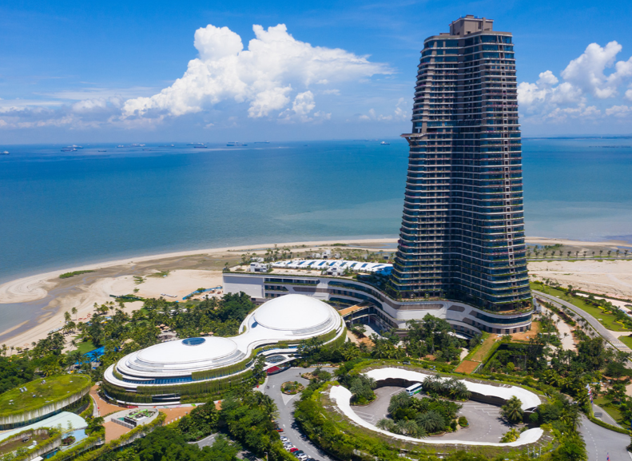
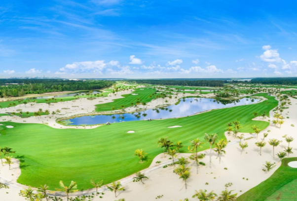

The short answer is yes: Forest City can be worth buying in 2026 for the right purpose. It offers an island environment, Singapore proximity through the Second Link, resort facilities and property choices at a very different price point from Singapore. The better question is not whether Forest City is simply “good” or “bad”, but whether its strengths match the way you plan to use the property.
Why Forest City deserves a fresh look in 2026
Forest City should no longer be judged only by the headlines attached to its early years. Pulau 1 now sits within the Forest City Special Financial Zone and Forest City is Flagship G of the Johor-Singapore Special Economic Zone. The current framework includes incentives for qualifying financial activities, knowledge workers and selected property transactions.
Policy support does not automatically create rental demand or guarantee appreciation. What it does provide is a clearer long-term economic role than Forest City had several years ago. Buyers can now assess an established physical environment together with a more defined policy direction.
What already exists today: coastal views, landscaped residential areas, high-rise homes, landed villas, beach access, a hotel and two golf courses. For buyers who value space, scenery and a quieter resort-style setting, these are usable lifestyle features rather than future promises.

Who may find the strongest value here?
Forest City may be worth shortlisting if...
- You want a second home or own-stay property with a quieter environment. The island setting, sea views, green surroundings and resort facilities create a lifestyle that is difficult to reproduce in a typical city condominium.
- Your Singapore travel is centred on the Second Link. Forest City can make sense for buyers who use Tuas and value proximity to Singapore without needing to live in central Johor Bahru.
- You are exploring the MM2H SEZ/SFZ category. The current programme requires an approved participant to purchase and own a home in Forest City. Its fixed-deposit requirements are lower than the national Silver, Gold and Platinum categories, subject to the latest programme and Johor property-acquisition rules.
- You can take a medium-to-long-term view. Forest City is easier to appreciate when the property also serves a real lifestyle, retirement or residency purpose instead of depending only on a short-term resale or rental forecast.

Three things to confirm before choosing a unit
1. Your real travel pattern. Forest City is positioned for the Second Link, not the JB city-centre checkpoint. Test the route at the time you would normally travel and compare it with where you work, study or spend most of your week.
2. The specific tower and unit. Forest City is not one single property product. View, unit condition, occupancy, maintenance quality, parking and the surrounding amenities can differ. Judge the actual unit and building, not only the wider development's reputation.
3. Your purpose and holding plan. If rental income is important, check current comparable rents, competition and realistic occupancy before buying. If the home is mainly for own stay, retirement or regular visits, the lifestyle value may carry more weight than a short-term yield calculation.
If these three points still fit your needs, Forest City becomes much easier to evaluate on what it offers today rather than on an old label.
What can your budget buy in 2026?
Forest City has a wide range of high-rise choices. The options I currently cover run from approximately RM400,000 to RM1.5 million, depending on the development, unit size, floor, view, furnishing, condition and whether the property is a new or secondary-market unit.
A low headline price is not automatically the better deal. I would compare the total purchase cost, monthly maintenance, actual view, renovation condition and the buyer's intended use before comparing price per square foot.
One cost worth checking: current rules provide a 50% stamp-duty remission on the instrument of transfer and the loan or financing agreement for qualifying purchases in Pulau 1 between September 2024 and December 2034. The property, purchaser and transaction must meet the stated conditions, so confirm eligibility with your lawyer before treating it as part of your budget.
Choose the Forest City property type that fits you
Compare the high-rise island lifestyle with a landed golf-course home before deciding which type belongs on your shortlist.
My honest bottom line
Forest City in 2026 is worth a serious look for buyers who value an island lifestyle, use the Second Link, are considering the MM2H SEZ/SFZ pathway or want a longer-term property they can genuinely use. The combination of an existing resort environment and a clearer government-backed economic direction gives buyers more reasons to evaluate it than several years ago.
I would not buy based only on a promised rental return or future appreciation. I would buy only after the actual unit, building management, travel pattern and ownership costs make sense. That is not a negative conclusion; it is how a good Forest City purchase is separated from the wrong one.
So, is Forest City worth buying? Yes, when its location and lifestyle solve a real need for you. The next step is to compare the right unit rather than keep debating the entire development in general terms.
Want to compare the current Forest City units?
PM me your budget, whether you are buying for own stay or investment, and your preferred unit type. I will share the latest promotion, price and available units, then help you compare the practical differences before arranging a viewing.
PM Sam for current Forest City options